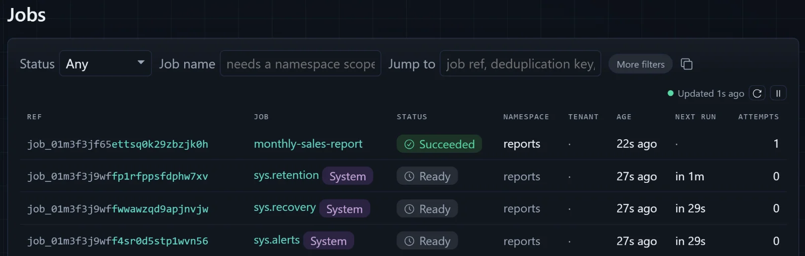
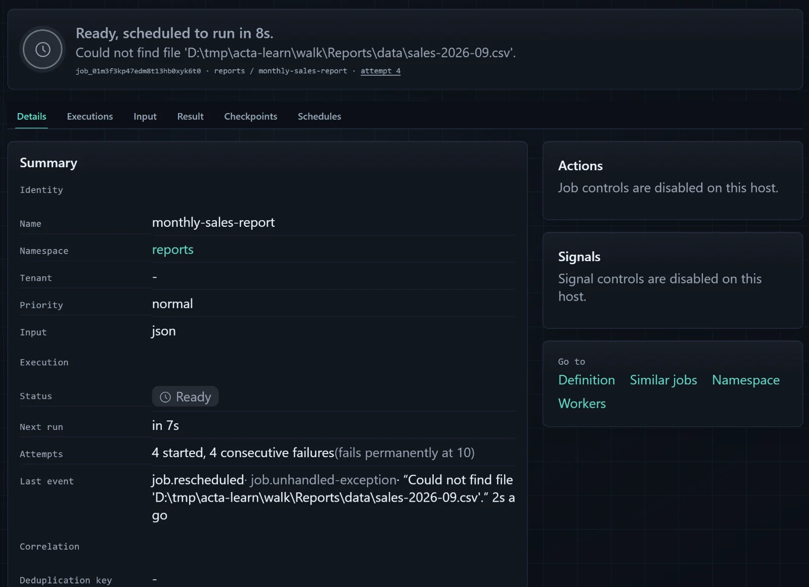
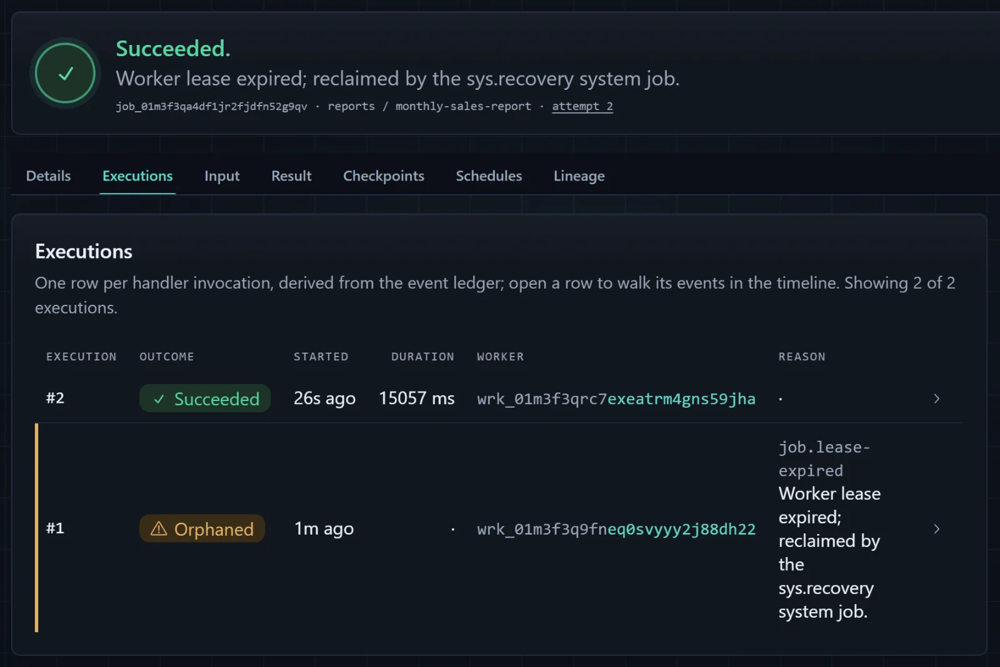

learn acta · a first-time tutorial
Build a report service that survives a crash.
In about an hour you will build a small ASP.NET Core application that generates sales reports in the background, watch a job fail and retry on its own, and then kill the process halfway through a report and see the same job finish after a restart. Along the way you will learn what Acta is, what each line of setup is for, and exactly what it does and does not promise.
Work that should not vanish
Most web applications eventually grow a request that should not do its work while the user waits. Somebody clicks "Generate the August sales report", and the report takes half a minute to build. You do not want the browser spinning for thirty seconds, so you answer straight away with "Your report is on its way" and do the work in the background.
The easy version of that is a Task.Run or an in-memory queue feeding a hosted service. It works on your machine. Then one day the application restarts in the middle of a report, because of a deploy, a crash, or a container being moved, and the report simply never arrives. Nothing failed loudly. The work lived in memory, and memory is gone.
Acta is a .NET library for exactly this problem. It writes each piece of background work to your application's own SQL database as a row before anything runs, and it treats that row, not the running thread, as the truth. A worker inside your application claims the row, runs your code, and records the outcome. If the code throws, the row says so and schedules another try. If the process disappears, the row still says the work is unfinished, and Acta hands it to the next process that comes along. There is no message broker to install and no separate server: PostgreSQL, SQL Server, or an embedded SQLite file is enough.
That is the idea. The rest of this article makes it concrete, one small piece at a time.
What you are going to build
The project is a tiny report service called Reports. It exposes two endpoints: POST /reports?month=2026-08 asks for a monthly sales report and returns immediately, and GET /reports/{id} tells you how that request is doing and, when it is done, where the finished report is. The sales figures come from small CSV files in the project, and the report is a plain text file written next to them, so everything you need to see is on your own disk. There are no accounts, API keys, or cloud services involved.
You need the .NET 10 SDK, a terminal, a browser, and curl, which ships with Windows 10 and later, macOS, and most Linux distributions. You should be comfortable reading C# and have seen an ASP.NET Core minimal API before. You do not need to know anything about job queues, workers, or durable execution. The code targets Acta 1.0 and uses its SQLite provider, so there is no database server to install.
The app grows in three stages. First it generates a report. Then it copes with a report whose data has not arrived yet. Finally it records its progress so that a report interrupted by a crash picks up where the record says it left off. You will keep the same project and the same database the whole way through.
Create the project
Start from the empty ASP.NET Core template and add two packages:
dotnet new web -n Reports
cd Reports
dotnet add package Acta.Sqlite
dotnet add package Acta.AspNetCoreActa.Sqlite brings in everything that runs your jobs: the engine, the SQLite storage provider, a source generator that finds your job handlers at compile time, and analyzers that catch common mistakes as you type. Acta.AspNetCore adds an operator dashboard and a small JSON API that you will map into your app. The dashboard's web assets are embedded in the package, so there is nothing else to install or build.
Some sales to report on
Before any Acta code, the application needs something to do. Create a folder called data in the project and put August's sales export in it:
order,region,amount
1001,North,1250.00
1002,South,830.50
1003,North,410.25
1004,West,2200.00
1005,South,95.75
1006,West,640.00Next comes the part of the program that knows about sales and knows nothing about Acta. SalesFiles reads a month's CSV into totals, and writes those totals out as a text report. Add it to the project root:
using System.Globalization;
using System.Text;
namespace Reports;
public sealed record RegionTotal(string Region, decimal Amount);
public sealed record SalesFigures(string Month, int Orders, decimal Total, List<RegionTotal> Regions);
public sealed class SalesFiles(IWebHostEnvironment env)
{
private string DataFolder => Path.Combine(env.ContentRootPath, "data");
private string ReportFolder => Path.Combine(env.ContentRootPath, "reports");
public static bool IsValidMonth(string month) =>
DateOnly.TryParseExact(month, "yyyy-MM", CultureInfo.InvariantCulture, DateTimeStyles.None, out _);
public async Task<SalesFigures> LoadAsync(string month, CancellationToken ct)
{
// Throws FileNotFoundException when this month's export has not arrived yet.
var lines = await File.ReadAllLinesAsync(Path.Combine(DataFolder, $"sales-{month}.csv"), ct);
var rows = lines
.Skip(1)
.Where(line => line.Length > 0)
.Select(line => line.Split(','))
.Select(cells => new RegionTotal(cells[1], decimal.Parse(cells[2], CultureInfo.InvariantCulture)))
.ToList();
var regions = rows
.GroupBy(row => row.Region)
.OrderBy(group => group.Key)
.Select(group => new RegionTotal(group.Key, group.Sum(row => row.Amount)))
.ToList();
return new SalesFigures(month, rows.Count, rows.Sum(row => row.Amount), regions);
}
public async Task<string> WriteAsync(string fileName, SalesFigures figures, CancellationToken ct)
{
var report = new StringBuilder()
.AppendLine($"Sales report for {figures.Month}")
.AppendLine($"Orders: {figures.Orders}")
.AppendLine($"Total: {figures.Total.ToString("N2", CultureInfo.InvariantCulture)}")
.AppendLine();
foreach (var region in figures.Regions)
{
report.AppendLine($" {region.Region,-8}{region.Amount.ToString("N2", CultureInfo.InvariantCulture),12}");
}
// Write to a temporary file, then move it into place. Running this twice leaves the same file.
Directory.CreateDirectory(ReportFolder);
var path = Path.Combine(ReportFolder, fileName);
await File.WriteAllTextAsync(path + ".tmp", report.ToString(), ct);
File.Move(path + ".tmp", path, overwrite: true);
return path;
}
}Two details in this ordinary-looking class will matter later. LoadAsync throws when the CSV for a month does not exist, which is how the app will meet its first failure. And WriteAsync never appends or half-writes: it writes a temporary file and moves it over the final name in one operation, so writing the same report twice leaves exactly the same file behind. Keep that second property in mind; it turns out to be the most important line in the program.
Describing the work: the job
In Acta, a unit of background work is a job. A job has an input, which is the instruction written to the database, and a handler, which is the method that carries it out. Create SalesReportJobs.cs:
using Acta;
namespace Reports;
public sealed record MonthlySalesReport(string Month);
public sealed record ReportResult(string Month, int Orders, decimal Total, string File);
public sealed class SalesReportJobs(SalesFiles files, ILogger<SalesReportJobs> log)
{
[Job("monthly-sales-report")]
public async Task<ReportResult> Handle(MonthlySalesReport input, JobContext ctx, CancellationToken ct)
{
log.LogInformation("{Job} execution {Execution}: building the {Month} report", ctx.JobRef, ctx.ExecutionNumber, input.Month);
var figures = await files.LoadAsync(input.Month, ct);
var file = await files.WriteAsync($"sales-{input.Month}-{ctx.JobRef}.txt", figures, ct);
log.LogInformation("{Job} wrote {File}", ctx.JobRef, file);
return new ReportResult(input.Month, figures.Orders, figures.Total, file);
}
}MonthlySalesReport is the input. It is a plain record, and Acta stores it as JSON in the job's row, so it should hold what the work needs to know and nothing else: here, just the month. Because it is stored, it is also a small contract. A job enqueued today may run after tomorrow's deploy, so change input records the way you would change a public API.
The [Job("monthly-sales-report")] attribute turns the method into a handler. The string is the job's durable name, the name that goes into the database, the dashboard, logs, and alerts. It must be kebab-case, and once jobs with that name exist you should treat it as permanent, because rows written under the old name will not follow a rename. The class and method names, by contrast, are yours to refactor.
The handler's parameters are the input, a JobContext, and a CancellationToken. The context tells the handler which job it is running. ctx.JobRef is the job's public identifier, a string like job_01m3f3jf65ettsq0k29zbzjk0h that is created when the job is enqueued and never changes. ctx.ExecutionNumber counts how many times this handler has been started for this job, starting at 1. We log both because they will tell the story when things go wrong.
The report file is named after the job ref, not after the time or a random value. Whatever happens to this job, every attempt at it writes to the same file name. The handler returns a ReportResult, which Acta also stores, so the API can later answer "where is my report?" from the database. SalesReportJobs itself is an ordinary class: Acta creates it through dependency injection for each run, which is why it can ask for SalesFiles and a logger in its constructor.
Wiring Acta into the application
Now replace the template's Program.cs with this:
using Acta;
using Acta.AspNetCore;
using Acta.Sqlite;
using Reports;
var builder = WebApplication.CreateBuilder(args);
builder.Services.AddSingleton<SalesFiles>();
builder.Services.UseActa(acta =>
{
acta.UseSqlite(sqlite =>
{
sqlite.ConnectionString = "Data Source=reports.db";
// A local-development convenience. In production, a deploy step applies the schema.
sqlite.ApplyMigrationsOnStartup = builder.Environment.IsDevelopment();
});
acta.Run<ReportsJobs>("reports");
});
var app = builder.Build();
app.MapActa("/acta");
app.MapPost("/reports", async (string month, IJobs jobs, CancellationToken ct) =>
{
if (!SalesFiles.IsValidMonth(month))
{
return Results.BadRequest("Ask for a month such as 2026-08.");
}
var job = await jobs.EnqueueAsync(new MonthlySalesReport(month), ct: ct);
return Results.Accepted($"/reports/{job.JobRef}", new { job = job.JobRef.ToString() });
});
app.MapGet("/reports/{id}", async (string id, IJobs jobs, CancellationToken ct) =>
{
if (!JobRef.TryParse(id, out var jobRef) || await jobs.GetAsync(jobRef, ct) is not { } job)
{
return Results.NotFound();
}
var report = job.Status == JobStatusCode.Succeeded ? await jobs.GetResultAsync<ReportResult>(jobRef, ct) : null;
return Results.Ok(new
{
job = job.JobRef.ToString(),
status = job.Status.ToString(),
executions = job.ExecutionNumber,
failures = job.FailureCount,
report,
});
});
app.Run();Read it from the top. UseActa registers Acta with the host, and inside it UseSqlite says where the durable record lives: a file called reports.db in the project folder. Acta keeps its tables in that database, the same way it would keep them in your PostgreSQL or SQL Server database in a larger system. ApplyMigrationsOnStartup lets the app create those tables itself the first time it runs. That is handy on your machine and inappropriate in production, where schema changes should come from a deployment step, so the line only switches it on in the Development environment that dotnet run uses.
The next line needs the most explanation. ReportsJobs is a class you did not write. At build time, Acta's source generator finds every [Job] method in the project and generates a manifest listing them. It names the manifest after the last segment of the project's root namespace plus Jobs, so a project called Reports gets ReportsJobs, and it puts the class in that root namespace. That is why the file starts with using Reports;: Program.cs uses top-level statements, which live in the global namespace and would not otherwise see it.
Run<ReportsJobs>("reports") then does two things. It registers every job in the manifest under an Acta namespace called reports, and it starts a worker in this process that claims and runs jobs from that namespace. That makes three different things with similar names, and it helps to keep them apart. Reports is the C# namespace of your code. reports is the Acta namespace, a label in the database that says which service owns these jobs; a second service would run its own jobs under its own namespace. monthly-sales-report is the durable name of one job within it.
There is no separate worker process: the application that serves HTTP requests also runs the jobs, on background threads managed by the host. You can split the two later without changing the handler.
MapActa("/acta") serves the dashboard and its JSON API. Out of the box it only answers requests from the local machine, and it is read-only until you deliberately enable its controls behind authentication.
The two endpoints are the application's own. POST /reports calls jobs.EnqueueAsync with a MonthlySalesReport; Acta picks the job from the input's type, writes the row, and hands back the new job's ref, which the endpoint returns with 202 Accepted before any report exists. GET /reports/{id} reads the job's current status from the database and includes the stored result once the job has succeeded.
The first report
Start the app. The --urls switch pins the address so the commands in this article work as written; without it, the app uses the random port from Properties/launchSettings.json.
dotnet run --urls http://localhost:5080Among the startup lines you should see Now listening on: http://localhost:5080, and a few lines from WorkerRuntime saying the claim loop and heartbeat have started: that is the worker. You will also see a warning about "manifest generation" being derived from a file's last-write time. It matters when you deploy containers, and it is harmless here. A new reports.db file has appeared in the project folder.
In a second terminal, ask for August. On Windows PowerShell, type curl.exe rather than curl, because curl there is an alias for a different command.
curl -i -X POST "http://localhost:5080/reports?month=2026-08"HTTP/1.1 202 Accepted
Content-Type: application/json; charset=utf-8
Location: /reports/job_01m3f3jf65ettsq0k29zbzjk0h
{"job":"job_01m3f3jf65ettsq0k29zbzjk0h"}The request came back at once with a job ref. Use your own ref to ask how it went:
curl http://localhost:5080/reports/job_01m3f3jf65ettsq0k29zbzjk0h{
"job": "job_01m3f3jf65ettsq0k29zbzjk0h",
"status": "Succeeded",
"executions": 1,
"failures": 0,
"report": {
"month": "2026-08",
"orders": 6,
"total": 5426.50,
"file": "D:\\tmp\\acta-learn\\walk\\Reports\\reports\\sales-2026-08-job_01m3f3jf65ettsq0k29zbzjk0h.txt"
}
}Open the file it names, in the new reports folder:
Sales report for 2026-08
Orders: 6
Total: 5,426.50
North 1,660.25
South 926.25
West 2,840.00Terminal 1 shows the handler's two log lines, execution 1: building the 2026-08 report and wrote ..., followed by Acta noting the job as completed. It is worth pausing on the order of events, because everything later depends on it. The endpoint wrote a row describing the job and returned. The worker, polling the same database, claimed the row, which marked it as taken by this process for a limited time called a lease. It ran the handler, then wrote the outcome and the result back to the row. At every moment, the question "what happened to that report?" had an answer in reports.db, not just in the memory of a running process.
The job in the dashboard
Open http://localhost:5080/acta in your browser. The Overview page summarises everything Acta knows about this database. Choose Jobs in the sidebar and you will see your report and three others:

The rows marked System are jobs Acta registers in every namespace. sys.recovery is the one that rescues work from processes that have died; you will watch it do that shortly. sys.alerts turns failures into alert records, and sys.retention deletes finished jobs after their retention period, 90 days by default. They are ordinary jobs, stored and scheduled the same way as yours.
Click your report's ref. The detail page shows the job's name, namespace, and status, an Attempts line reading "1 started, 0 consecutive failures", and a timeline with two events: execution started, and a completion a few milliseconds later. The Input and Result tabs show the stored JSON. The Actions panel says "Job controls are disabled on this host", and the sidebar shows a READ-ONLY badge: that is the safe default mentioned earlier, not an error. Every screen in the dashboard is a view of rows in reports.db. Nothing here is kept in the browser or in a separate service.
When the data is late
Real report services spend a surprising amount of time waiting for their inputs. Ask for September, whose export does not exist yet, and LoadAsync will throw FileNotFoundException.
Acta treats an exception escaping the handler as a failed attempt and schedules another. How many attempts and how far apart is the job's retry policy. The defaults suit production: up to 15 attempts, starting a minute apart and doubling each time up to a day. For this tutorial they are far too patient, so give the job its own policy. Stop the app with Ctrl+C and change the attribute in SalesReportJobs.cs:
[Job("monthly-sales-report", MaxAttempts = 10, Backoff = "10s")]MaxAttempts = 10 allows ten consecutive failures before the job is marked Failed for good. Backoff = "10s" waits a fixed ten seconds between attempts. Backoff also accepts growing schedules such as "1m..8h x2", one minute doubling up to eight hours, which is what you would choose for a real upstream dependency. Start the app again with the same dotnet run command, then request September:
curl -X POST "http://localhost:5080/reports?month=2026-09"Terminal 1 now shows the handler starting, a warning with the FileNotFoundException and its stack trace, and a line saying the job was re-armed. Ten seconds later the same thing happens with execution 2, then execution 3. Open the job in the dashboard:

This is the page to learn to read. Ready with a next-run time means "waiting for the next attempt", not "stuck". The reason is the stored exception message, and "4 started, 4 consecutive failures (fails permanently at 10)" says exactly how much patience is left. Further down, the timeline lists every attempt. The terminal tells the same story:
dotnet run --no-build -- jobs events job_01m3f3kp47edm8t13hb0xyk6t0 --take 3Events for job job_01m3f3kp47edm8t13hb0xyk6t0 (newest first)
2026-09-26T14:59:28.3810000Z job.rescheduled executing -> ready worker wrk_01m3f3knjcfhcr6end0t5xjeyw exec 5
reason: job.unhandled-exception
message: Could not find file 'D:\tmp\acta-learn\walk\Reports\data\sales-2026-09.csv'.
2026-09-26T14:59:28.3810000Z job.execution-finished executing -> ready worker wrk_01m3f3knjcfhcr6end0t5xjeyw exec 5
reason: job.unhandled-exception
message: Could not find file 'D:\tmp\acta-learn\walk\Reports\data\sales-2026-09.csv'.
2026-09-26T14:59:28.3800000Z job.execution-started dispatched -> executing worker wrk_01m3f3knjcfhcr6end0t5xjeyw exec 5Now play the part of the upstream system and deliver the export. Create data/sales-2026-09.csv while the job is still retrying:
order,region,amount
1101,North,980.00
1102,West,1520.40
1103,South,310.00
1104,North,2045.60Within ten seconds the next attempt finds the file, the log shows wrote ..., and the status endpoint reports the job as Succeeded, in our run with "executions": 6 and "failures": 5. Nobody resubmitted anything. The request made earlier was kept as a row, the row remembered it was unfinished, and the retry policy kept offering it to the handler until the world outside had caught up. You may also notice a log line starting ACTA ALERT: by default a failing job raises an alert, and without a configured channel the alert is written to the log.
Had the file never arrived, the tenth failure would have left the job in the Failed state, still in the database with its whole history, for an operator to inspect and, with controls enabled, restart.
Recording progress with steps
So far the handler is all-or-nothing. If an attempt dies halfway through, the next attempt starts from the top and does everything again. For this report that costs little, but real jobs are often a chain of expensive or externally visible operations: query a warehouse for ten minutes, render a PDF, upload it, email the finance team. Redoing the query because the upload failed is wasteful. Redoing the email is worse.
Acta's answer is the step. ctx.RunStepAsync("name", ...) runs a piece of the handler and records its outcome in the database under that name. When the handler runs again for the same job, a step that already succeeded does not run its code; it returns the recorded result instead. Replace SalesReportJobs.cs with this version, which splits the work into two steps:
using Acta;
namespace Reports;
public sealed record MonthlySalesReport(string Month);
public sealed record ReportResult(string Month, int Orders, decimal Total, string File);
public sealed class SalesReportJobs(SalesFiles files, ILogger<SalesReportJobs> log)
{
[Job("monthly-sales-report", MaxAttempts = 10, Backoff = "10s")]
public async Task<ReportResult> Handle(MonthlySalesReport input, JobContext ctx, CancellationToken ct)
{
log.LogInformation("{Job} execution {Execution}: building the {Month} report", ctx.JobRef, ctx.ExecutionNumber, input.Month);
var figures = await ctx.RunStepAsync("load-sales", async token =>
{
log.LogInformation("{Job} loading sales for {Month}", ctx.JobRef, input.Month);
return await files.LoadAsync(input.Month, token);
}, ct);
var file = await ctx.RunStepAsync("write-report", async token =>
{
// Demo only: a pause long enough to stop the app halfway. Delete it when you are done.
await Task.Delay(TimeSpan.FromSeconds(15), token);
return await files.WriteAsync($"sales-{input.Month}-{ctx.JobRef}.txt", figures, token);
}, ct);
log.LogInformation("{Job} wrote {File}", ctx.JobRef, file);
return new ReportResult(input.Month, figures.Orders, figures.Total, file);
}
}The load-sales step reads the CSV and returns the totals, which Acta stores as JSON in its step record. The write-report step writes the file. The fifteen-second Task.Delay is there only to give you time to interrupt the program in the next two sections; it is marked as demo code and you should remove it afterwards. The log line inside load-sales is our evidence: it prints only when that step's code actually runs.
One more change makes the crash demonstration quick. A worker proves it is alive by renewing its leases on a regular heartbeat, every 45 seconds by default, and a lease lasts four heartbeats, so a live worker can miss a few without losing its work. That is sensible in production and slow for a tutorial, so shorten the heartbeat in Development. Replace Program.cs with this final version, whose only change is the if block inside UseActa:
using Acta;
using Acta.AspNetCore;
using Acta.Sqlite;
using Reports;
var builder = WebApplication.CreateBuilder(args);
builder.Services.AddSingleton<SalesFiles>();
builder.Services.UseActa(acta =>
{
acta.UseSqlite(sqlite =>
{
sqlite.ConnectionString = "Data Source=reports.db";
// A local-development convenience. In production, a deploy step applies the schema.
sqlite.ApplyMigrationsOnStartup = builder.Environment.IsDevelopment();
});
acta.Run<ReportsJobs>("reports");
if (builder.Environment.IsDevelopment())
{
// Notice a vanished process in seconds rather than minutes, so the restart demo is quick.
acta.ConfigureOptions(options => options.HeartbeatInterval = TimeSpan.FromSeconds(2));
}
});
var app = builder.Build();
app.MapActa("/acta");
app.MapPost("/reports", async (string month, IJobs jobs, CancellationToken ct) =>
{
if (!SalesFiles.IsValidMonth(month))
{
return Results.BadRequest("Ask for a month such as 2026-08.");
}
var job = await jobs.EnqueueAsync(new MonthlySalesReport(month), ct: ct);
return Results.Accepted($"/reports/{job.JobRef}", new { job = job.JobRef.ToString() });
});
app.MapGet("/reports/{id}", async (string id, IJobs jobs, CancellationToken ct) =>
{
if (!JobRef.TryParse(id, out var jobRef) || await jobs.GetAsync(jobRef, ct) is not { } job)
{
return Results.NotFound();
}
var report = job.Status == JobStatusCode.Succeeded ? await jobs.GetResultAsync<ReportResult>(jobRef, ct) : null;
return Results.Ok(new
{
job = job.JobRef.ToString(),
status = job.Status.ToString(),
executions = job.ExecutionNumber,
failures = job.FailureCount,
report,
});
});
app.Run();With a two-second heartbeat the lease lasts eight seconds, and a dead process's jobs become reclaimable almost immediately. SalesFiles.cs and the CSV files stay as they are. That is the complete program.
Ctrl+C is a polite request
Before crashing anything, see what a normal stop looks like. Start the app, request August again, and press Ctrl+C in Terminal 1 within a few seconds, while the report is in its fifteen-second pause:
info: Reports.SalesReportJobs[0]
job_01m3f3phvdfsma84tn5r1h1py8 execution 1: building the 2026-08 report
info: Reports.SalesReportJobs[0]
job_01m3f3phvdfsma84tn5r1h1py8 loading sales for 2026-08
info: Microsoft.Hosting.Lifetime[0]
Application is shutting down...
info: Reports.SalesReportJobs[0]
job_01m3f3phvdfsma84tn5r1h1py8 wrote D:\tmp\acta-learn\walk\Reports\reports\sales-2026-08-job_01m3f3phvdfsma84tn5r1h1py8.txtThe application did not stop at once. Ctrl+C asks the .NET host to shut down gracefully, and Acta takes part: the worker stops claiming new jobs, keeps its leases alive, and waits for handlers already running to finish before the process exits. In our run the process lingered for about eleven seconds, the rest of the demo pause, and the report was written before it went. The wait is bounded by the host's shutdown timeout, 30 seconds unless you configure otherwise. A job still running when that runs out is cancelled and later reclaimed like one from a crashed process.
This is the behaviour you want during a deploy, and it is also why Ctrl+C proves nothing about crashes. A crash does not ask.
Pulling the plug
Start the app once more and request September. Watch Terminal 1: when loading sales for 2026-09 appears, the first step has finished and the handler is inside the fifteen-second pause in write-report. Within that window, kill the process from Terminal 2 without giving it any chance to clean up:
Stop-Process -Name Reports -Forcepkill -KILL -x ReportsThese end the Reports process immediately, the way a power cut or an out-of-memory kill would. dotnet run in Terminal 1 exits too. No shutdown code ran, no "I'm leaving" message was written anywhere, and the report file does not exist.
With the application down, ask the database what it thinks is going on. Use the job ref that POST returned:
dotnet run --no-build -- jobs explain job_01m3f3qa4df1jr2fjdfn52g9qvjob_01m3f3qa4df1jr2fjdfn52g9qv reports/monthly-sales-report
Executing, but its lease expired 1s ago.
Worker:
- Worker 1.0.0 (wrk_01m3f3q9fneq0svyyy2j88dh22), lease expired at 2026-09-26T15:00:58.2790000Z.
- Last heartbeat at 2026-09-26T15:00:50.2790000Z.
- Recovery should return it to Ready on the next maintenance tick.
Durable work:
- Step "load-sales" succeeded and will not rerun.
- Step "write-report" is in progress.
Next actions:
- Wait for sys.recovery to reclaim the job on the next maintenance tick.
- Cancel the job if it should not continue.The job still claims to be executing, because the process running it never said otherwise, but its lease has expired and nothing has renewed it. The first step's outcome is recorded; the second step started and never finished. Run the command in the first seconds after the kill and you will see "Lease expires in 5s" instead: until the lease runs out, a dead process and a slow one look the same, and Acta waits before deciding.
Now restart the app in Terminal 1 with the same command, against the same reports.db. Enqueue nothing. sys.recovery runs once a minute, so within about a minute it finds the expired lease, marks the old attempt as orphaned, and returns the job to Ready, and the new process's worker claims it:
info: Reports.SalesReportJobs[0]
job_01m3f3qa4df1jr2fjdfn52g9qv execution 2: building the 2026-09 report
info: Reports.SalesReportJobs[0]
job_01m3f3qa4df1jr2fjdfn52g9qv wrote D:\tmp\acta-learn\walk\Reports\reports\sales-2026-09-job_01m3f3qa4df1jr2fjdfn52g9qv.txtLook at what is there and what is missing. It is the same job ref as before the crash. It says execution 2, because the handler was started again from its first line: the opening log statement ran a second time. The loading sales line did not appear, because load-sales had a recorded result, and RunStepAsync returned it instead of reading the CSV again. write-report had no recorded outcome, so it ran in full, pause included, and wrote the file. In our run the app came back a few seconds after 15:01 UTC, just missing that minute's recovery pass; the 15:02 pass reclaimed the job, and the report was written fifteen seconds later.

sys.recovery.The Executions tab tells the story in two rows, each with its own worker ref, because every run of the application registers as a new worker. The Details tab lists both steps as "succeeded and will not rerun", and the failure count is 1: an attempt lost to a dead process counts against the retry budget like any other failed attempt.
Now remove the Task.Delay line and its comment from write-report. Its work is done.
What Acta promised, and what it did not
It is tempting to say Acta resumed the job where it stopped. It did not, and the difference is the most important thing in this article. Acta started the handler again, from the top, as a fresh call in a new process. The local variable figures in execution 2 did not survive from execution 1; nothing in memory did. It was filled in by RunStepAsync from the step record in the database. Any code outside a step, like the first log line, simply runs again. Acta's model is checkpoints, not replay: named steps are the checkpoints, and everything between them is ordinary code that must be safe to run more than once.
The name for this is at-least-once execution. Acta guarantees that the job's work will be attempted until it succeeds or its budget runs out. It does not guarantee that each piece runs exactly once, and no system that talks to the outside world can. Consider the worst moment for our report: the process dies after File.Move has put the report in place but before the step's success has been written to the database. On the next execution, write-report has no recorded outcome, so it runs again.
In this program that is harmless, and not by luck. The file name comes from the job ref, which is the same in every execution. The content comes from the recorded figures, which are the same too. The write replaces the whole file in one move. Running the step twice produces exactly what running it once did. Code with that property is called idempotent, and it is what makes at-least-once execution safe.
Now imagine a third step that emails the report to the finance team. The same worst moment means the email might go out twice, and no amount of care in Acta can prevent it, because the mail server is not in your database. The usual cure is to give the external system a key that stays the same across attempts, such as the job ref, and let it discard duplicates. When a duplicate is truly worse than a missing action, a step can be declared AtMostOnce(): it will never run twice, and if it was interrupted, the handler is told so and must check the outside world before deciding what to do. Either way, the protection belongs in your design, next to the side effect, not in a hope that crashes are rare.
From tutorial to your application
You have now used the everyday surface of Acta: an input and a [Job] handler, the generated manifest, EnqueueAsync to request work, GetAsync and GetResultAsync to read it back, a retry policy, steps, and two ways to inspect it all. An existing application uses the same pieces. Keep your host and your database, add the provider package that matches it, register with your existing connection string, and move one piece of background work behind a [Job] attribute; its constructor can ask for your existing services.
A few choices in this tutorial were made for a laptop and deserve a second look before real traffic arrives.
- Schema. Leave
ApplyMigrationsOnStartupoff outside Development and apply Acta's schema from your deployment pipeline, as described in the production guide. - Heartbeat and demo code. The two-second heartbeat is for demonstrations; with the default, a crashed process's jobs are reclaimed within a few minutes rather than a minute. The
Task.Delayshould already be gone. - The dashboard. It stays local-only and read-only until you change it. To reach it from other machines, turn off
LocalOnlyand put it behind your own authentication and authorization; enable controls only there. The guide's section on dashboard exposure shows how. - The database. SQLite is an embedded, single-machine store. When the application runs on more than one server, switch to
Acta.PostgresorActa.SqlServerandUsePostgresorUseSqlServer; the jobs themselves do not change. - Where results go. Our reports land on the local disk, which is fine for one machine. Across several servers, write them to shared storage and keep only a reference in the job's result.
- Duplicate requests. Two clicks on the button create two jobs. If one report per month is the rule, give the enqueue a deduplication key; the concepts guide explains how, and why a key prevents a second row but not a second side effect.
Further reading
You know enough now to use Acta in a real project and to read its documentation with the right picture in your head. These are the pages worth reading next, in roughly this order:
If you would rather have your coding assistant add Acta to an existing project, point it at useacta.net/start, which has prompts written for that.